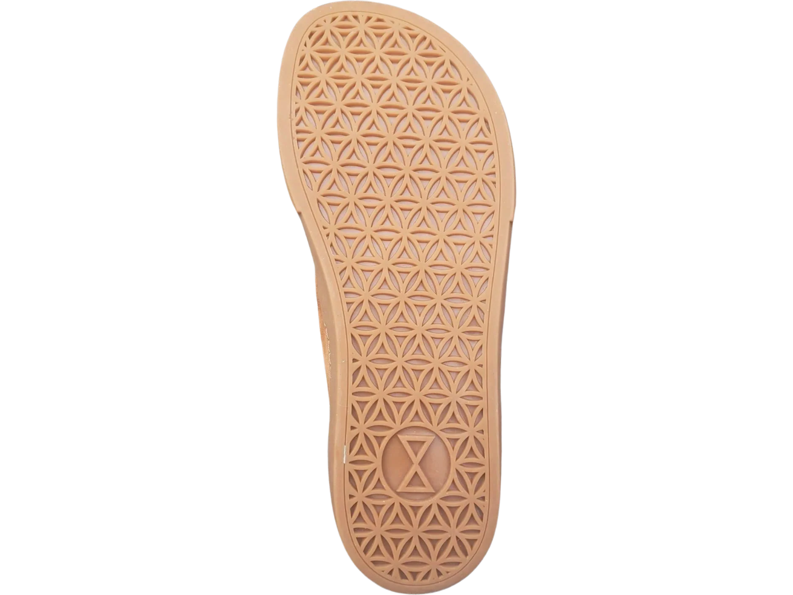
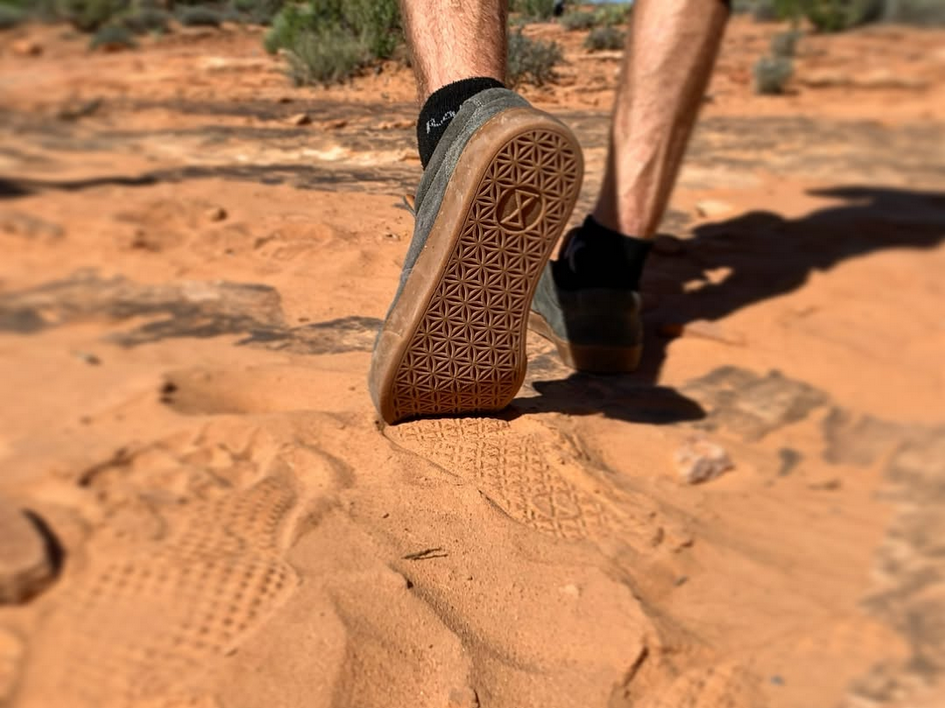
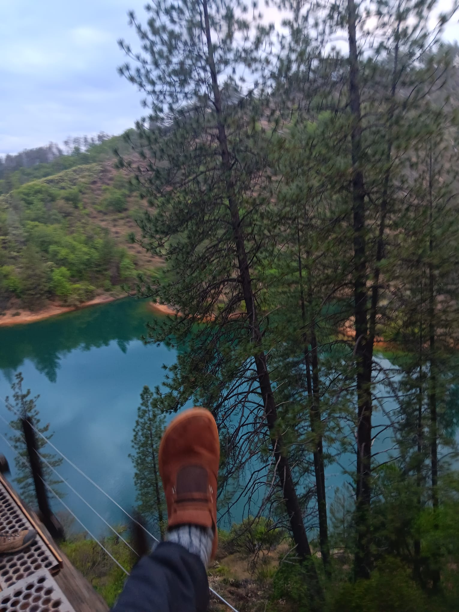
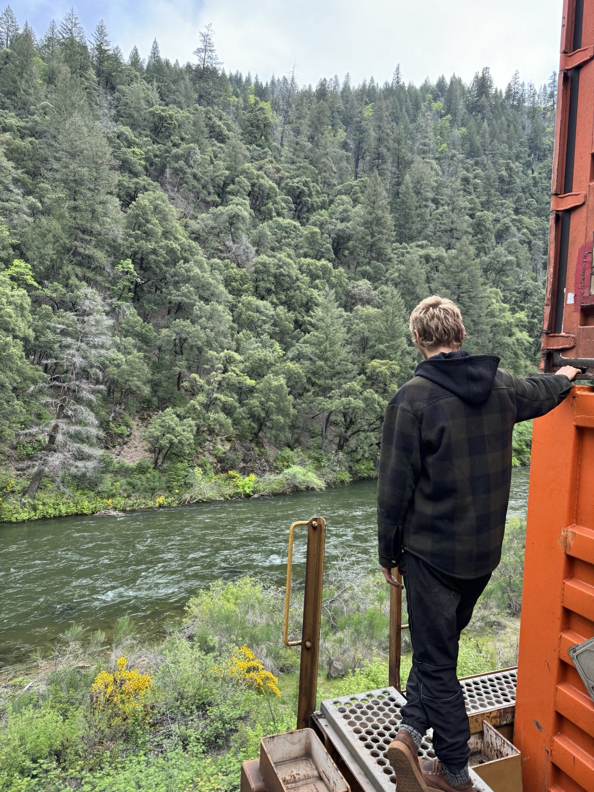
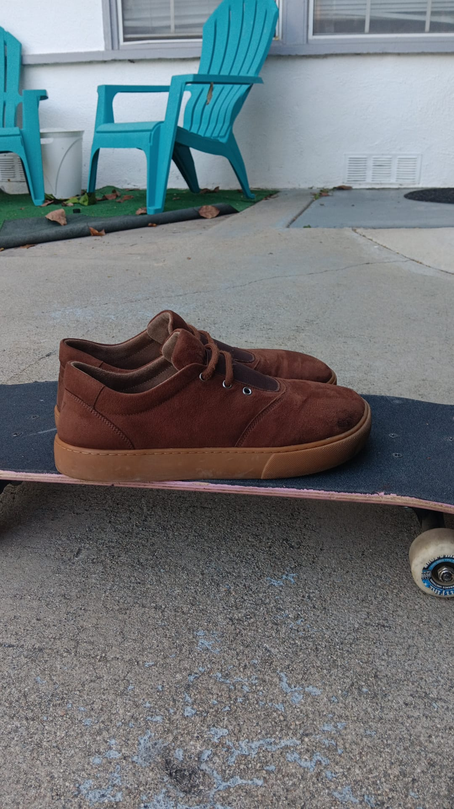

The 'SendTreader'
Our first design. It has a thick suede upper which withstands the griptape of a skateboard better than any
other fabrics/leather
alternatives (Although we do have a vegan option) We kept the laces high to avoid
getting torn and have spandex so they can slip on easier
A natural rubber sole which is thick enough to take
impact for the senders, combined with our dense foam insoles which make them comfortable.




